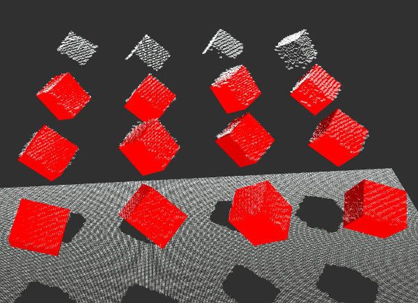

Visual Tracking
Overview

One of the crucial capabilities required for autonomous manipulation and grasping is hand-eye coordination. It relies on continuous feedback on the location of robot hand and object during manipulation. We develop principled methods that endow a robot with this critical ability that address the following challenges: strong and long-term occlusions, high-dimensional measurements and state spaces, real-time demands and delays between sensor streams of different modalities. We have also released data sets to benchmark different approaches towards object and robot arm tracking.
Check out the papers below on the different model- or learning-based approaches!
Probabilistic Object and Manipulator Tracking
Kappler, D., Meier, F., Issac, J., Mainprice, J., Garcia Cifuentes, C., Wüthrich, M., Berenz, V., Schaal, S., Ratliff, N., Bohg, J. Real-time Perception meets Reactive Motion Generation IEEE Robotics and Automation Letters, 3(3):1864-1871, July 2018. Finalist Amazon Best System Paper Award.
Garcia Cifuentes, C., Issac, J., Wüthrich, M., Schaal, S., Bohg, J. Probabilistic Articulated Real-Time Tracking for Robot Manipulation IEEE Robotics and Automation Letters (RA-L), 2(2):577-584, April 2017. 2017 RA-L Best Paper Award, Finalist ICRA '17 Best Vision Paper.
Issac, J., Wüthrich, M., Garcia Cifuentes, C., Bohg, J., Trimpe, S., Schaal, S. Depth-based Object Tracking Using a Robust Gaussian Filter In Proceedings of the IEEE International Conference on Robotics and Automation (ICRA) 2016, IEEE, IEEE International Conference on Robotics and Automation, May 2016.
Wüthrich, M., Garcia Cifuentes, C., Trimpe, S., Meier, F., Bohg, J., Issac, J., Schaal, S. Robust Gaussian Filtering using a Pseudo Measurement In Proceedings of the American Control Conference, Boston, MA, USA, July 2016.
Wüthrich, M., Bohg, J., Kappler, D., Pfreundt, C., Schaal, S. The Coordinate Particle Filter - A novel Particle Filter for High Dimensional Systems In Proceedings of the IEEE International Conference on Robotics and Automation, May 2015.
Wüthrich, M., Pastor, P., Kalakrishnan, M., Bohg, J., Schaal, S. Probabilistic Object Tracking Using a Range Camera In IEEE/RSJ International Conference on Intelligent Robots and Systems, pages: 3195-3202, IEEE, November 2013.
Robot Arm Pose Estimation as a Learning Problem
Widmaier, F., Kappler, D., Schaal, S., Bohg, J. Robot Arm Pose Estimation by Pixel-wise Regression of Joint Angles In Proceedings of the IEEE International Conference on Robotics and Automation (ICRA) 2016, IEEE, IEEE International Conference on Robotics and Automation, May 2016.
Bohg, J., Romero, J., Herzog, A., Schaal, S. Robot Arm Pose Estimation through Pixel-Wise Part Classification In IEEE International Conference on Robotics and Automation (ICRA) 2014, pages: 3143-3150, IEEE International Conference on Robotics and Automation (ICRA), June 2014.